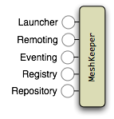

What is MeshKeeper?
MeshKeeper is a platform of services that allow Java applications to discover, launch, coordinate, and control remote processes across a grid of computers.
A MeshKeeper deployment consists a control server and multiple launch agents. A deployment can scale up to any number of computers on a cloud or grid or it can scale down to just running wholly embedded in your Java application.
To get started, see our user guides:
MeshKeeper Services

Process Launching: Allows clients to start, monitor, and terminate processes across all the computers that have the MeshKeeper Launcher Agent installed. The Launcher also allows you to easily remotely execute your Serializable Runnable objects on remote box. It takes care of properly replicating your application’s CLASSPATH to the launched JVM. For example:
Executor executor = mk.getLauncher().createRemoteExecutor("fastbox"); executor.execute(runnable);
Remoting: Provides easy mechanisms for enabling remote method invocation. While traditional java rmi is supported, MeshKeeper also provides additional mechanismsfor distributing objects that don’t implement the Remote interface (or its irritating RemoteExceptions). Best of all, unlike traditional RMI, remote objects don’t open TCP ports, all method invocations are routed via the MeshKeeper control server.
Eventing: Provides an simple topic based eventing API, which can be used to coordinate the activities of the distributed processes.
Data Registry: Provides a central location to store/retrieve remote objects and data. It uses a file system like tree structure but unlike file systems, the Registry allows you to watch for changes.
This flexible mechanism makes sharing of data between launched process a breeze.
Artifact Repository: Allows you to stage artifacts which are subsequently used by launch agents to download artifacts such as jvms, configuration files, and jars from http, ftp, webdav, and file based repositories.